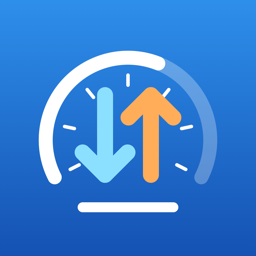

通信量メーター
リセットしてからの通信量を、モバイル通信と Wi-Fi に分けて
通信量メーターは、リセットボタンを押してから今までに、この iPhone がモバイル通信と Wi-Fi でどれだけ通信したか（下り・上り・合計）を見るためのアプリです。時間ごとのグラフや、今月の合計と月末の見込みも見られるので、料金プランを考えるときの目安になります。
使い方
- 「計測」の画面に、リセットしてからのモバイル通信と Wi-Fi の量が出ます。測り直したいときは「リセットして測り直す」を押します。
- 「まとめ」の画面で、今月のモバイル通信の合計、このままのペースで使ったときの月末の見込み、1 日あたりの量、今日と昨日の量、月ごとの量を見られます。料金プランの締め日（末日・1〜28 日）を選ぶと、その区切りで数えます。
- 「グラフ」の画面で、秒・分・時間・日ごとに、いつどれだけ通信したかを見られます。
よくある質問
- 契約している会社の数字と合いません。
- 本アプリの数字は、この iPhone の中で数えたものです。会社が数える量とは数え方が少し違うため、ずれることがあります。表示はあくまで目安です。正確な使用量や料金は、契約している会社のアプリやサイトで確かめてください。
- アプリを閉じていても数えられますか。
- はい。iPhone が持っている通信量の合計から、前に見たときとの差を足していくので、閉じていたあいだの分も次に開いたときに足されます。ただし、閉じていたあいだのグラフの形は、その時間に均等に割り振った大まかなものです。
- iPhone を再起動すると、どうなりますか。
- iPhone は再起動すると通信量の合計を 0 から数え直します。本アプリは再起動に気づいて続きから足しますが、アプリを開かないまま再起動したときは、最後に開いてから再起動するまでの分を数えられないことがあります。そのときは画面でお知らせします。
- アプリごとの通信量は見られますか。
- iPhone の仕組み上、ほかのアプリごとの量は読めないため、iPhone 全体の量だけを表示します。
- リセットするとグラフも消えますか。
- いいえ。リセットで 0 に戻るのは「計測」の数字だけです。グラフと「まとめ」の記録は残ります。
- 広告の設定を変えたい。
- 広告に関する同意が必要な地域（欧州経済領域、英国、スイス）では、「計測」の画面の下の「広告の設定」から変えられます。トラッキングの許可は、iPhone の「設定」>「プライバシーとセキュリティ」>「トラッキング」でいつでも変えられます。許可しなくても、すべての機能を使えます。
動作環境
- iPhone、iOS 17 以降
- 縦向きのみ
お問い合わせ
不具合の報告やご要望は、kazuma09201101@icloud.comまでお送りください。お使いの iPhone の機種と iOS のバージョンを添えていただくと、原因を調べやすくなります。個人で開発しているため、お返事に時間がかかることがあります。